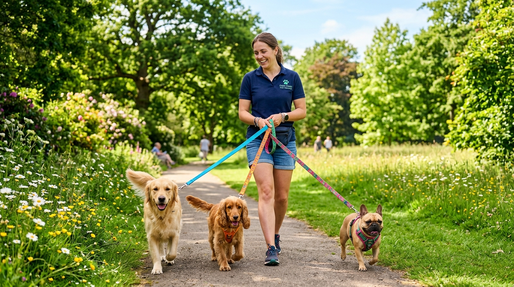
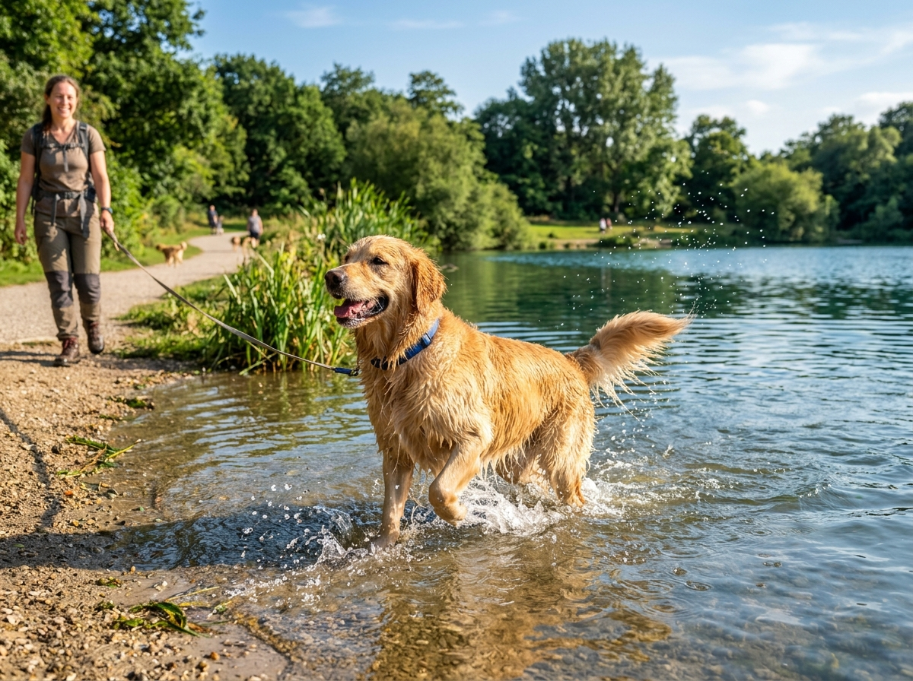

Una imagen vale más que mil palabras. Descubre cómo disfrutan los perritos del vecindario en sus salidas diarias y recorridos de fin de semana.




Mira cómo organizamos la dinámica de los paseos: recogida puntual en casa, camino seguro con arneses dobles, tiempo libre de olfato y regreso con patas limpias.
"Toby sufría de mucha ansiedad por quedarse solo. Desde que se unió a Paseos Felices llega relajado y feliz. Las fotos que mandan a diario alegran mi jornada de trabajo."
— Camila Soto Mamá de Toby (Golden Retriever)"Es un alivio contar con personas tan profesionales y cariñosas en el mismo barrio. Se nota su amor genuino por los perros y la seguridad con la que los manejan."
— Jorge Valenzuela Papá de Luna y Milo (Mestizos)"Las salidas de senderismo del fin de semana son fantásticas. Mi perra regresa renovada y duerme como un ángel. 100% recomendado este emprendimiento vecinal."
— Andrea Morales Tutora de Kiara (Border Collie)